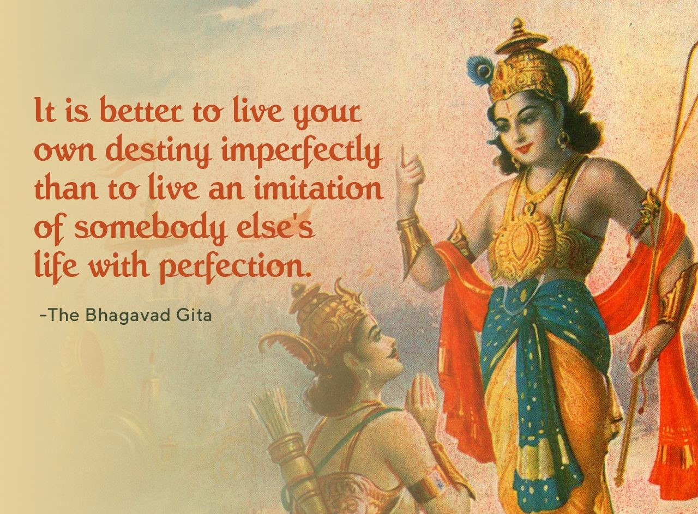

प्रथम अध्याय का नाम अर्जुनविषादयोग है। वह गीता के उपदेश का विलक्षण नाटकीय रंगमंच प्रस्तुत करता है जिसमें श्रोता और वक्ता दोनों ही कुतूहल शांति के लिए नहीं वरन् जीवन की प्रगाढ़ समस्या के समाधान के लिये प्रवृत्त होते हैं। शौर्य और धैर्य, साहस और बल इन चारों गुणों की प्रभूत मात्रा से अर्जुन का व्यक्तित्व बना था और इन चारों के ऊपर दो गुण और थे एक क्षमा, दूसरी प्रज्ञा। बलप्रधान क्षात्रधर्म से प्राप्त होनेवाली स्थिति में पहुँचकर सहसा अर्जुन के चित्त पर एक दूसरे ही प्रकार के मनोभाव का आक्रमण हुआ, कार्पण्य का। एक विचित्र प्रकार की करुणा उसके मन में भर गई और उसका क्षात्र स्वभाव लुप्त हो गया। जिस कर्तव्य के लिए वह कटिबद्ध हुआ था उससे वह विमुख हो गया। ऊपर से देखने पर तो इस स्थिति के पक्ष में उसके तर्क धर्मयुक्त जान पड़ते हैं, किंतु उसने स्वयं ही उसे कार्पण्य दोष कहा है और यह माना है कि मन की इस कायरता के कारण उसका जन्मसिद्ध स्वभाव उपहत या नष्ट हो गया था। वह निर्णय नहीं कर पा रहा था कि युद्ध करे अथवा वैराग्य ले ले। क्या करें, क्या न करें, कुछ समझ में नहीं आता था। इस मनोभाव की चरम स्थिति में पहुँचकर उसने धनुषबाण एक ओर डाल दिया।
कृष्ण ने अर्जुन की वह स्थिति देखकर जान लिया कि अर्जुन का शरीर ठीक है किंतु युद्ध आरंभ होने से पहले ही उस अद्भुत क्षत्रिय का मनोबल टूट चुका है। बिना मन के यह शरीर खड़ा नहीं रह सकता। अतएव कृष्ण के सामने एक गुरु कर्तव्य आ गया। अत: तर्क से, बुद्धि से, ज्ञान से, कर्म की चर्चा से, विश्व के स्वभाव से, उसमें जीवन की स्थिति से, दोनों के नियामक अव्यय पुरुष के परिचय से और उस सर्वोपरि परम सत्तावान ब्रह्म के साक्षात दर्शन से अर्जुन के मन का उद्धार करना, यही उनका लक्ष्य हुआ। इसी तत्वचर्चा का विषय गीता है। पहले अध्याय में सामान्य रीति से भूमिका रूप में अर्जुन ने भगवान से अपनी स्थिति कह दी।
दूसरे अध्याय का नाम सांख्ययोग है। इसमें जीवन की दो प्राचीन संमानित परंपराओं का तर्कों द्वारा वर्णन आया है। अर्जुन को उस कृपण स्थिति में रोते देखकर कृष्ण ने उनका ध्यान दिलाया है कि इस प्रकार का क्लैव्य और हृदय की क्षुद्र दुर्बलता अर्जुन जैसे वीर के लिए उचित नहीं।
कृष्ण ने अर्जुन की अब तक दी हुई सब युक्तियों को प्रज्ञावाद का झूठा रूप कहा। उनकी युक्ति यह है कि प्रज्ञादर्शन काल, कर्म और स्वभाव से होनेवाले संसार की सब घटनाओं और स्थितियों को अनिवार्य रूप से स्वीकार करता है। जीना और मरना, जन्म लेना और बढ़ना, विषयों का आना और जाना। सुख और दुख का अनुभव, ये तो संसार में होते ही हैं, इसी को प्राचीन आचार्य पर्यायवाद का नाम भी देते थे। काल की चक्रगति इन सब स्थितियों को लाती है और ले जाती है। जीवन के इस स्वभाव को जान लेने पर फिर शोक नहीं होता। यही भगवान का व्यंग्य है कि प्रज्ञा के दृष्टिकोण को मानते हुए भी अर्जुन इस प्रकार के मोह में क्यों पड़ गया है।
ऊपर के दृष्टिकोण का एक आवश्यक अंग जीवन की नित्यता और शरीर की अनित्यता था। नित्य जीव के लिए शोक करना उतना ही व्यर्थ है जितना अनित्य शरीर को बचाने की चिंता। ये दोनों अपरिहार्य हैं। जन्म और मृत्यु बारी बारी से होते ही हैं, ऐसा समझकर शोक करना उचित नहीं है।
फिर एक दूसरा दृष्टिकोण स्वधर्म का है। जन्म से ही प्रकृति ने सबके लिए एक धर्म नियत कर दिया है। उसमें जीवन का मार्ग, इच्छाओं की परिधि, कर्म की शक्ति सभी कुछ आ जाता है। इससे निकल कर नहीं भागा जा सकता। कोई भागे भी तो प्रकृत्ति उसे फिर खींच लाती है।
इस प्रकार काल का परिवर्तन या परिमाण, जीव की नित्यता और अपना स्वधर्म या स्वभाव जिन युक्तियों से भगवान्, ने अर्जुन को समझाया है उसे उन्होंने सांख्य की बुद्धि कहा है। इससे आगे अर्जुन के प्रश्न न करने पर भी उन्होंने योगमार्ग की बुद्धि का भी वर्णन किया। यह बुद्धि कर्म या प्रवृत्ति मार्ग के आग्रह की बुद्धि है इसमें कर्म करते हुए कर्म के फल की आसक्ति से अपने को बचाना आवश्यक है। कर्मयोगी के लिए सबसे बड़ा डर यही है कि वह फल की इच्छा के दल दल में फँस जाता है; उससे उसे बचना चाहिए।
अर्जुन को संदेह हुआ कि क्या इस प्रकार की बुद्धि प्राप्त करना संभव है। व्यक्ति कर्म करे और फल न चाहे तो उसकी क्या स्थिति होगी, यह एक व्यावहारिक शंका थी। उसने पूछा कि इस प्रकार का दृढ़ प्रज्ञावाला व्यक्ति जीवन का व्यवहार कैसे करता है? आना, जाना, खाना, पीना, कर्म करना, उनमें लिप्त होकर भी निर्लेप कैसे रहा जा सकता है? कृष्ण ने कितने ही प्रकार के बाह्य इंद्रियों की अपेक्षा मन के संयम की व्याख्या की है। काम, क्रोध, भय, राग, द्वेष के द्वारा मन का सौम्यभाव बिगड़ जाता है और इंद्रियाँ वश में नहीं रहतीं। इंद्रियजय ही सबसे बड़ी आत्मजय है। बाहर से कोई विषयों को छोड़ भी दे तो भी भीतर का मन नहीं मानता। विषयों का स्वाद जब मन से जाता है, तभी मन प्रफुल्लित, शांत और सुखी होता है। समुद्र में नदियाँ आकर मिलती हैं पर वह अपनी मर्यादा नहीं छोड़ता। ऐसे ही संसार में रहते हुए, उसके व्यवहारों को स्वीकारते हुए, अनेक कामनाओं का प्रवेश मन में होता रहता है। किंतु उनसे जिसका मन अपनी मर्यादा नहीं खोता उसे ही शांति मिलती हैं। इसे प्राचीन अध्यात्म परिभाषा में गीता में ब्राह्मीस्थिति कहा है।
इस प्रकार सांख्य की व्याख्या का उत्तर सुनकर कर्मयोग नामक तीसरे अध्याय में अर्जुन ने इस विषय में और गहरा उतरने के लिए स्पष्ट प्रश्न किया कि सांख्य और योग इन दोनों मार्गों में आप किसे अच्छा समझते हैं और क्यों नहीं यह निश्चित कहते कि मैं इन दोनों में से किसे अपनाऊँ? इसपर कृष्ण ने भी उतनी ही स्पष्टता से उत्तर दिया कि लोक में दो निष्ठाएँ या जीवनदृष्टियाँ हैं-सांख्यवादियों के लिए ज्ञानयोग है और कर्ममार्गियों के लिए कर्मयोग है। यहाँ कोई व्यक्ति कर्म छोड़ ही नहीं सकता। प्रकृति तीनों गुणों के प्रभाव से व्यक्ति को कर्म करने के लिए बाध्य करती है। कर्म से बचनेवालों के प्रति एक बड़ी शंका है, वह यह कि वे ऊपर से तो कर्म छोड़ बैठते हैं पर मन ही मन उसमें डूबे रहते हैं। यह स्थिति असह्य है और इसे कृष्ण ने गीता में मिथ्याचार कहा है। मन में कर्मेद्रियों को रोककर कर्म करना ही सरल मानवीय मार्ग है। कृष्ण ने चुनौती के रूप में यहाँ तक कह दिया कि कर्म के बिना तो खाने के लिए अन्न भी नहीं मिल सकता। फिर कृष्ण ने कर्म के विधान को चक्र के रूप में उपस्थित किया। न केवल सामाजिक धरातल पर भिन्न व्यक्तियों के कर्मचक्र अरों की तरह आपस में पिरोए हुए हैं बल्कि पृथ्वी के मनुष्य और स्वर्ग के देवता दोनों का संबंध भी कर्मचक्र पर आश्रित है। प्रत्यक्ष है कि यहाँ मनुष्य कर्म करते हैं, कृषि करते हैं और दैवी शक्तियाँ वृष्टि का जल भेजती हैं। अन्न और पर्जन्य दोनों कर्म से उत्पन्न होते हैं। एक में मानवीय कर्म, दूसरे में दैवी कर्म। फिर कर्म के पक्ष में लोकसंग्रह की युक्ति दी गई है, अर्थात् कर्म के बिना समाज का ढाँचा खड़ा नहीं रह सकता। जो लोक के नेता हैं, जनक जैसे ज्ञानी हैं, वे भी कर्म में प्रवृत्ति रखते हैं। कृष्ण ने स्वयं अपना ही दृष्टांत देकर कहा कि मैं नारायण का रूप हूँ, मेरे लिए कुछ कर्म शेष नहीं है। फिर भी तंद्रारहित होकर कर्म करता हूँ और अन्य लोग मेरे मार्ग पर चलते हैं। अंतर इतना ही है कि जो मूर्ख हैं वे लिप्त होकर कर्म करते हैं पर ज्ञानी असंग भाव से कर्म करता है। गीता में यहीं एक साभिप्राय शब्द बुद्धिभेद है। अर्थात् जो साधारण समझ के लोग कर्म में लगे हैं उन्हें उस मार्ग से उखाड़ना उचित नहीं, क्योंकि वे ज्ञानवादी बन नहीं सकते, और यदि उनका कर्म भी छूट गया तो वे दोनों ओर से भटक गये
चौथे अध्याय में, जिसका नाम ज्ञान-कर्म-संन्यास-योग है, यह बाताया गया है कि ज्ञान प्राप्त करके कर्म करते हुए भी कर्मसंन्यास का फल किस उपाय से प्राप्त किया जा सकता है। यहीं गीता का वह प्रसिद्ध आश्वासन है कि जब जब धर्म की ग्लानि होती है तब तब मनुष्यों के बीच भगवान का अवतार होता है, अर्थात् भगवान की शक्ति विशेष रूप से मूर्त होती है।
यहीं पर एक वाक्य विशेष ध्यान देने योग्य है- क्षिप्रं हि मानुषे लोके सिद्धिर्भवति कर्मजा (४१२)। ‘कर्म से सिद्धि’-इससे बड़ा प्रभावशाली जय सूत्र गीतादर्शन में नहीं है। किंतु गीतातत्व इस सूत्र में इतना सुधार और करता है कि वह कर्म असंग भाव से अर्थात् फलासक्ति से बचकर करना चाहिए।भगवान बताते हैं कि सबसे पहले मैंने यह ज्ञान भगवान सूर्य को दिया था। सूर्य के पश्चात गुरु परंपरा द्वारा आगे बढ़ा। किन्तु अब यह लुप्तप्राय हो गया है। अब वही ज्ञान मैं तुम्हे बताने जा रहा हूँ। अर्जुन कहते हैं कि आपका तो जन्म हाल में ही हुआ है तो आपने यह सूर्य से कैसे कहा? तब श्री भगवान ने कहा है की तेरे और मेरे अनेक जन्म हुए लेकिन तुम्हे याद नहीं पर मुझे याद है।
" यदा यदा हि धर्मस्य ग्लानिर्भवति भारत। अभ्युत्थानमधर्मस्य तदात्मानं सृजाम्यहम् ॥४-७॥ "
" परित्राणाय साधूनां विनाशाय च दुष्कृताम् । धर्मसंस्थापनार्थाय सम्भवामि युगे युगे ॥४-८॥ "
श्री कृष्ण कहते हैं की जब जब धर्म की हानि और अधर्म की वृद्धि होती है तब तब मैं अपने स्वरूप की रचना करता हूँ| ॥४-७॥ साधुओं की रक्षा के लिए, दुष्कर्मियों का विनाश करने के लिए, धर्म की स्थापना के लिए मैं युग युग में मानव के रूप में अवतार लेता हूँ| ॥४-८॥
पाँचवे अध्याय कर्मसंन्यास योग नामक में फिर वे ही युक्तियाँ और दृढ़ रूप में कहीं गई हैं। इसमें कर्म के साथ जो मन का संबंध है, उसके संस्कार पर या उसे विशुद्ध करने पर विशेष ध्यान दिलाया गया है। यह भी कहा गया है कि ऊँचे धरातल पर पहुँचकर सांख्य और योग में कोई भेद नहीं रह जाता है। किसी एक मार्ग पर ठीक प्रकार से चले तो समान फल प्राप्त होता है। जीवन के जितने कर्म हैं, सबको समर्पण कर देने से व्यक्ति एकदम शांति के ध्रुव बिंदु पर पहुँच जाता है और जल में खिले कमल के समान कर्म रूपी जल से लिप्त नहीं होता।
भगवान श्रीकृष्ण इस अध्याय में कर्मयोग और साधु पुरुष का वर्णन करते हैं। तथा बताते हैं कि मैं सृष्टि के हर जीव में समान रूप से रहता हूँ अतः प्राणी को समदर्शी होना चाहिए।
" विद्याविनयसंपन्ने ब्राह्मणे गवि हस्तिनि।। "
" शुनि चैव श्वपाके च पंडिता: समदर्शिन: "
"ज्ञानी महापुरुष विद्या-विनययुक्त ब्राह्मण में और चाण्डाल में तथा गाय, हाथी एवं कुत्ते में भी समरूप परमात्मा को देखने वाले होते हैं।"
छठा अध्याय आत्मसंयम योग है जिसका विषय नाम से ही प्रकट है। जितने विषय हैं उन सबसे इंद्रियों का संयम-यही कर्म और ज्ञान का निचोड़ है। सुख में और दुख में मन की समान स्थिति, इसे ही योग कहते हैं।
सातवें अध्याय की संज्ञा ज्ञानविज्ञान योग है। ये प्राचीन भारतीय दर्शन की दो परिभाषाएँ हैं। उनमें भी विज्ञान शब्द वैदिक दृष्टि से बहुत ही महत्वपूर्ण था। सृष्टि के नानात्व का ज्ञान विज्ञान है और नानात्व से एकत्व की ओर प्रगति ज्ञान है। ये दोनों दृष्टियाँ मानव के लिए उचित हैं। इस प्रसंग में विज्ञान की दृष्टि से अपरा और परा प्रकृति के इन दो रूपों की जो सुनिश्चित व्याख्या यहाँ गीता ने दी है, वह अवश्य ध्यान देने योग्य है। अपरा प्रकृति में आठ तत्व हैं, पंचभूत, मन, बुद्धि और अहंकार। जिस अंड से मानव का जन्म होता है। उसमें ये आठों रहते हैं। किंतु यह प्राकृत सर्ग है अर्थात् यह जड़ है। इसमें ईश्वर की चेष्टा के संपर्क से जो चेतना आती है उसे परा प्रकृति कहते हैं; वही जीव है। आठ तत्वों के साथ मिलकर जीवन नवाँ तत्व हो जाता है। इस अध्याय में भगवान के अनेक रूपों का उल्लेख किया गया है जिनका और विस्तार विभूतियोग नामक दसवें अध्याय में आता है। यहीं विशेष भगवती दृष्टि का भी उल्लेख है जिसका सूत्र-वासुदेव: सर्वमिति, सब वसु या शरीरों में एक ही देवतत्व है, उसी की संज्ञा विष्णु है। किंतु लोक में अपनी अपनी रु चि के अनुसार अनेक नामों और रूपों में उसी एक देवतत्व की उपासना की जाती है। वे सब ठीक हैं। किंतु अच्छा यही है कि बुद्धिमान मनुष्य उस ब्रह्मतत्व को पहचाने जो अध्यात्म विद्या का सर्वोच्च शिखर है।
पंचतत्व, मन, बुद्धि भी मैं हूँ| मैं ही संसार की उत्पत्ति करता हूँ और विनाश भी मैं ही करता हूँ। मेरे भक्त चाहे जिस प्रकार भजें परन्तु अंततः मुझे ही प्राप्त होते हैं। मैं योगमाया से अप्रकट रहता हूँ और मुर्ख मुझे केवल साधारण मनुष्य ही समझते हैं।
" यो यो यां यां तनुं भक्तः श्रद्धयार्चितुमिच्छति।
तस्य तस्याचलां श्रद्धां तामेव विदधाम्यहम्।।7.21।। "
" वेदाहं समतीतानि वर्तमानानि चार्जुन।
भविष्याणि च भूतानि मां तु वेद न कश्चन।।7.26।। "
आठवें अध्याय की संज्ञा अक्षर ब्रह्मयोग है। उपनिषदों में अक्षर विद्या का विस्तार हुआ। गीता में उस अक्षरविद्या का सार कह दिया गया है-अक्षर ब्रह्म परमं, अर्थात् परब्रह्म की संज्ञा अक्षर है। मनुष्य, अर्थात् जीव और शरीर की संयुक्त रचना का ही नाम अध्यात्म है। जीवसंयुक्त भौतिक देह की संज्ञा क्षर है और केवल शक्तितत्व की संज्ञा आधिदैवक है। देह के भीतर जीव, ईश्वर तथा भूत ये तीन शक्तियाँ मिलकर जिस प्रकार कार्य करती हैं उसे अधियज्ञ कहते हैं। गीताकार ने दो श्लोकों में (८।३-४) इन छह पारिभाषाओं का स्वरूप बाँध दिया है। गीता के शब्दों में ॐ एकाक्षर ब्रह्म है (८।१३)।
नवें अध्याय को राजगुह्ययोग कहा गया है, अर्थात् यह अध्यात्म विद्या विद्याराज्ञी है और यह गुह्य ज्ञान सबमें श्रेष्ठ है। राजा शब्दका एक अर्थ मन भी था। अतएव मन की दिव्य शक्तिमयों को किस प्रकार ब्रह्ममय बनाया जाय, इसकी युक्ति ही राजविद्या है। इस क्षेत्र में ब्रह्मतत्व का निरूपण ही प्रधान है, उसी से व्यक्त जगत का बारंबार निर्माण होता है। वेद का समस्त कर्मकांड यज्ञ, अमृत, और मृत्यु, संत और असंत, और जितने भी देवी देवता है, सबका पर्यवसान ब्रह्म में है। लोक में जो अनेक प्रकार की देवपूजा प्रचलित है, वह भी अपने अपने स्थान में ठीक है, समन्वय की यह दृष्टि भागवत आचार्यों को मान्य थी, वस्तुत: यह उनकी बड़ी शक्ति थी। इसी दृष्टिकोण का विचार या व्याख्या दसवें अध्याय में पाई जाती है। इसका नाम विभूतियोग है। इसका सार यह है कि लोक में जितने देवता हैं, सब एक ही भगवान, की विभूतियाँ हैं, मनुष्य के समस्त गुण और अवगुण भगवान की शक्ति के ही रूप हैं। बुद्धि से इन छुटभैए देवताओं की व्याख्या चाहे ने हो सके किंतु लोक में तो वह हैं ही। कोई पीपल को पूज रहा है। कोई पहाड़ को कोई नदी या समुद्र को, कोई उनमें रहनेवाले मछली, कछुओं को। यों कितने देवता हैं, इसका कोई अंत नहीं। विश्व के इतिहास में देवताओं की यह भरमार सर्वत्र पाई जाती है। भागवतों ने इनकी सत्ता को स्वीकारते हुए सबको विष्णु का रूप मानकर समन्वय की एक नई दृष्टि प्रदान की। इसी का नाम विभूतियोग है। जो सत्व जीव बलयुक्त अथवा चमत्कारयुक्त है, वह सब भगवान का रूप है। इतना मान लेने से चित्त निर्विरोध स्थिति में पहुँच जाता है।
" सर्वभूतानि कौन्तेय प्रकृतिं यान्ति मामिकाम्।
कल्पक्षये पुनस्तानि कल्पादौ विसृजाम्यहम् ॥ ७ ॥ "
अध्याय १० - विभूति योग
११वें अध्याय का नाम विश्वरूपदर्शन योग है। इसमें अर्जुन ने भगवान का विश्वरूप देखा। विराट रूप का अर्थ है मानवीय धरातल और परिधि के ऊपर जो अनंत विश्व का प्राणवंत रचनाविधान है, उसका साक्षात दर्शन। विष्णु का जो चतुर्भुज रूप है, वह मानवीय धरातल पर सौम्यरूप है।
जब अर्जुन ने भगवान का विराट रूप देखा तो उसके मस्तक का विस्फोटन होने लगा। ‘दिशो न जाने न लभे च शर्म’ ये ही घबराहट के वाक्य उनके मुख से निकले और उसने प्रार्थना की कि मानव के लिए जो स्वाभाविक स्थिति ईश्वर ने रखी है, वही पर्याप्त है
अध्याय १० - विभूति योग
११वें अध्याय का नाम विश्वरूपदर्शन योग है। इसमें अर्जुन ने भगवान का विश्वरूप देखा। विराट रूप का अर्थ है मानवीय धरातल और परिधि के ऊपर जो अनंत विश्व का प्राणवंत रचनाविधान है, उसका साक्षात दर्शन। विष्णु का जो चतुर्भुज रूप है, वह मानवीय धरातल पर सौम्यरूप है।
जब अर्जुन ने भगवान का विराट रूप देखा तो उसके मस्तक का विस्फोटन होने लगा। ‘दिशो न जाने न लभे च शर्म’ ये ही घबराहट के वाक्य उनके मुख से निकले और उसने प्रार्थना की कि मानव के लिए जो स्वाभाविक स्थिति ईश्वर ने रखी है, वही पर्याप्त है
अध्याय १० - विभूति योग
१३वें अध्याय में एक सीधा विषय क्षेत्र और क्षेत्रज्ञ का विचार है। यह शरीर क्षेत्र है, उसका जाननेवाला जीवात्मा क्षेत्रज्ञ है।
१४वें अध्याय का नाम गुणत्रय विभाग योग है। यह विषय समस्त वैदिक, दार्शनिक और पौराणिक तत्वचिंतन का निचोड़ है-सत्व, रज, तम नामक तीन गुण-त्रिको की अनेक व्याख्याएँ हैं। गुणों की साम्यावस्था का नाम प्रधान या प्रकृति है। गुणों के वैषम्य से ही वैकृत सृष्टि का जन्म होता है। अकेला सत्व शांत स्वभाव से निर्मल प्रकाश की तरह स्थिर रहता है और अकेला तम भी जड़वत निश्चेष्ट रहता है। किंतु दोनों के बीच में छाया हुआ रजोगुण उन्हें चेष्टा के धरातल पर खींच लाता है। गति तत्व का नाम ही रजस है।
१५वें अध्याय का नाम पुरुषोत्तमयोग है। इसमें विश्व का अश्वत्थ के रूप में वर्णन किया गया है। यह अश्वत्थ रूपी संसार महान विस्तारवाला है। देश और काल में इसका कोई अंत नहीं है। किंतु इसका जो मूल या केंद्र है, जिसे ऊर्ध्व कहते हैं, वह ब्रह्म ही है एक ओर वह परम तेज, जो विश्वरूपी अश्वत्थ को जन्म देता है, सूर्य और चंद्र के रूप में प्रकट है, दूसरी ओर वही एक एक चैतन्य केंद्र में या प्राणि शरीर में आया हुआ है। जैसा गीता में स्पष्ट कहा है-अहं वैश्वानरो भूत्वा प्राणिनां देहमाश्रित: (१५.१४)। वैश्वानर या प्राणमयी चेतना से बढ़कर और दूसरा रहस्य नहीं है। नर या पुरुष तीन हैं-क्षर, अक्षर और अव्यय। पंचभूतों का नाम क्षर है, प्राण का नाम अक्षर है और मनस्तत्व या चेतना की संज्ञा अव्यय है। इन्हीं तीन नरों की एकत्र स्थिति से मानवी चेतना का जन्म होता है उसे ही ऋषियों ने वैश्वानर अग्नि कहा है।
१६वें अध्याय में देवासुर संपत्ति का विभाग बताया गया है। आरंभ से ही ऋग्देव में सृष्टि की कल्पना दैवी और आसुरी शक्तियों के रूप में की गई है। यह सृष्टि के द्विविरुद्ध रूप की कल्पना है, एक अच्छा और दूसरा बुरा। एक प्रकाश में, दूसरा अंधकार में। एक अमृत, दूसरा मर्त्य। एक सत्य, दूसरा अनृत।
१७वें अध्याय की संज्ञा श्रद्धात्रय विभाग योग है। इसका संबंध सत, रज और तम, इन तीन गुणों से ही है, अर्थात् जिसमें जिस गुण का प्रादुर्भाव होता है, उसकी श्रद्धा या जीवन की निष्ठा वैसी ही बन जाती है। यज्ञ, तप, दान, कर्म ये सब तीन प्रकार की श्रद्धा से संचालित होते हैं। यहाँ तक कि आहार भी तीन प्रकार का है। उनके भेद और लक्षण गीता ने यहाँ बताए हैं।
१८वें अध्याय की संज्ञा मोक्षसंन्यास योग है। इसमें गीता के समस्त उपदेशों का सार एवं उपसंहार है। यहाँ पुन: बलपूर्वक मानव जीवन के लिए तीन गुणों का महत्व कहा गया है। पृथ्वी के मानवों में और स्वर्ग के देवताओं में कोई भी ऐसा नहीं जो प्रकृति के चलाए हुए इन तीन गुणों से बचा हो। मनुष्य को बहुत देख भालकर चलना आवश्यक है जिससे वह अपनी बुद्धि और वृत्ति को बुराई से बचा सके और क्या कार्य है, क्या अकार्य है, इसको पहचान सके। धर्म और अधर्म को, बंध और मोक्ष को, वृत्ति और निवृत्ति को जो बुद्धि ठीक से पहचनाती है, वही सात्विकी बुद्धि है और वही मानव की सच्ची उपलब्धि है।
इस प्रकार भगवान ने जीवन के लिए व्यावहारिक मार्ग का उपदेश देकर अंत में यह कहा है कि मनुष्य को चाहिए कि संसार के सब व्यवहारों का सच्चाई से पालन करते हुए, जो अखंड चैतन्य तत्व है, जिसे ईश्वर कहते हैं, जो प्रत्येक प्राणी के हृद्देश या केंद्र में विराजमान है, उसमें विश्वास रखे, उसका अनुभव करे। वही जीव की सत्ता है, वही चेतना है और वही सर्वोपरि आनंद का स्रोत है।